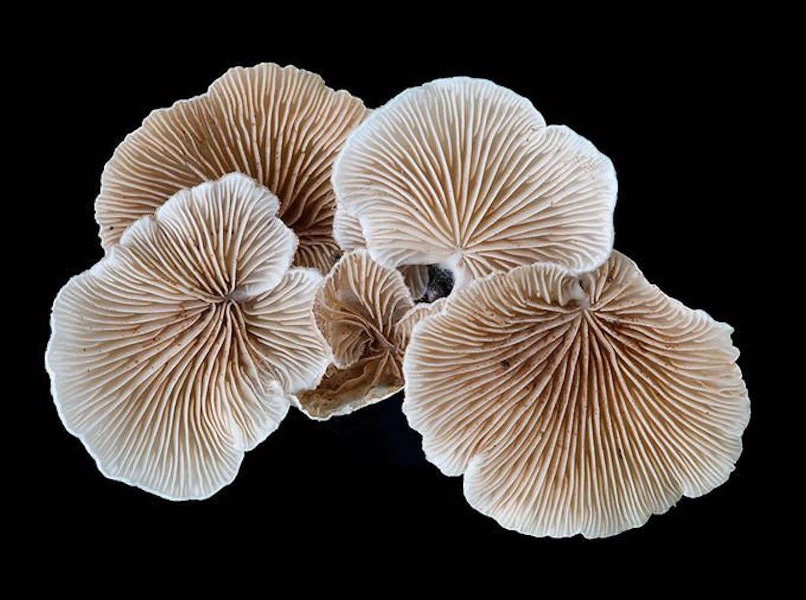

Paperback 2017 19.95 14.99 ISBN9780691178325 352 pp. 6 x 9 1/4 29 b/w illus. E-book ISBN9781400873548
⟶
On the Possibility of Life in Capitalist Ruins
Matsutake is the most valuable mushroom in the world—and a weed that grows in human-disturbed forests across the northern hemisphere.
Through its ability to nurture trees, matsutake helps forests to grow in daunting places. It is also an edible delicacy in Japan, where it sometimes
commands astronomical prices. In all its contradictions, matsutake offers insights into areas far beyond just mushrooms and addresses a crucial
question: what manages to live in the ruins we have made?
A tale of diversity within our damaged landscapes, The Mushroom at the End of the World follows one of the strangest commodity chains of our
times to explore the unexpected corners of capitalism. Here, we witness the varied and peculiar worlds of matsutake commerce: the worlds of
Japanese gourmets, capitalist traders, Hmong jungle fighters, industrial forests, Yi Chinese goat herders, Finnish nature guides, and more. These
companions also lead us into fungal ecologies and forest histories to better understand the promise of cohabitation in a time of massive human
destruction.
By investigating one of the world's most sought-after fungi, The Mushroom at the End of the World presents an original examination into the relation
between capitalist destruction and collaborative survival within multispecies landscapes, the prerequisite for continuing life on earth.
Anna Lowenhaupt Tsing is professor of anthropology at the University of California, Santa Cruz, and a Niels Bohr Professor at Aarhus University
in Denmark, where she codirects Aarhus University Research on the Anthropocene (AURA). She is the author of Friction and In the Realm of
the Diamond Queen (both Princeton).
⟶
More about this book
- Winner of the 2016 Victor Turner Prize in Ethnographic Writing, Society for Humanistic Anthropology
- Winner of the 2016 Gregory Bateson Prize, The Society for Cultural Anthropology
- Finalist for the 2016 Northern California Book Awards in General Nonfiction, Northern California Book Reviewers
- One of Kirkus Reviews Best Nonfiction Books of 2015 in Business and Economics
- One of Kirkus Reviews Best Nonfiction Books of 2015 in Science
- One of Flavorwire’s 10 Best Books by Academic Publishers in 2015
- One of Times Higher Education’s Best Books of 2015
Endorsements
"Scientists and artists know that the way to handle an immense topic is often through close attention to a small
aspect of it, revealing the whole through the part. In the shape of a finch's beak we can see all of evolution. So
through close, indeed loving, attention to a certain fascinating mushroom, the matsutake, Anna Lowenhaupt
Tsing discusses how the whole immense crisis of ecology came about and why it continues. Critical of simplistic
reductionism, she offers clear analysis, and in place of panicked reaction considers possibilities of rational, humane,
resourceful behavior. In a situation where urgency and enormity can overwhelm the mind, she gives us a real way
to think about it. I'm very grateful to have this book as a guide through the coming years."
—Ursula K. Le Guin
On the Possibility of
Life in Capitalist Ruins
Matsutake is the most valuable mushroom in the world—
and a weed that grows in human-disturbed forests across
the northern hemisphere. Through its ability to nurture
trees, matsutake helps forests to grow in daunting places.
It is also an edible delicacy in Japan, where it sometimes
commands astronomical prices. In all its contradictions,
matsutake offers insights into areas far beyond just
mushrooms and addresses a crucial question: what
manages to live in the ruins we have made?
A tale of diversity within our damaged landscapes,
The Mushroom at the End of the World follows one of the
strangest commodity chains of our times to explore the
unexpected corners of capitalism. Here, we witness the
varied and peculiar worlds of matsutake commerce: the
worlds of Japanese gourmets, capitalist traders, Hmong
jungle fighters, industrial forests, Yi Chinese goat herders,
Finnish nature guides, and more. These companions also
lead us into fungal ecologies and forest histories to better
understand the promise of cohabitation in a time of massive
human destruction.
By investigating one of the world's most sought-after fungi,
The Mushroom at the End of the World presents an original
examination into the relation between capitalist destruction
and collaborative survival within multispecies landscapes,
the prerequisite for continuing life on earth.
Anna Lowenhaupt Tsing is professor of anthropology at
the University of California, Santa Cruz, and a Niels Bohr
Professor at Aarhus University
in Denmark, where she
codirects Aarhus University Research on the Anthropocene
(AURA). She is the author of Friction and In the Realm of
the Diamond Queen (both Princeton).
More about this book
- Winner of the 2016 Victor Turner Prize in
Ethnographic Writing, Society for Humanistic Anthropology
- Winner of the 2016 Gregory Bateson Prize,
The Society for Cultural Anthropology
- Finalist for the 2016 Northern California Book Awards in
General Nonfiction, Northern California Book Reviewers
- One of Kirkus Reviews Best Nonfiction Books of 2015 in Business
and Economics
- One of Kirkus Reviews Best Nonfiction Books of 2015 in Science
- One of Flavorwire’s 10 Best Books by Academic Publishers in 2015
- One of Times Higher Education’s Best Books of 2015
Endorsements
"Scientists and artists know that the way to handle an immense
topic is often through close attention to a small aspect of it, revealing
the whole through the part. In the shape of a finch's beak we can see
all of evolution. So through close, indeed loving, attention to a certain
fascinating mushroom, the matsutake, Anna Lowenhaupt Tsing
discusses how the whole immense crisis of ecology came about and
why it continues. Critical of simplistic reductionism, she offers clear
analysis, and in place of panicked reaction considers possibilities of
rational, humane, resourceful behavior. In a situation where urgency
and enormity can overwhelm the mind, she gives us a real way to
think about it. I'm very grateful to have this book as a guide through the
coming years."
—Ursula K. Le Guin